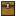
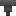

Litematica Viewer 投影查看器
拖进来试试
拖一个投影进来，直接打开网页版：材料清单、各项指标和 3D 都在浏览器里看。
一个投影，一张清单
导入投影，方块、实体、容器里的物品一次数清，按 盒 / 组 / 个 换算好，直接照着备料。
一座小型府邸，一共要……
0 个方块
92 种 · 草方块就要
名字数量单位
能做什么
-
材料清单
方块 / 实体 / 物品 / 总数四个页签，右键可忽略或快捷替换某一行
-
3D 预览
缩略图可拖拽旋转、滚轮缩放，需要细看就开网页 3D 渲染

容器分析箱子、潜影盒、漏斗里装了什么，一格一格摆给你看
-
步骤查看器
逐层看方块的贴图、朝向和上下半，照着一层层盖
-
红石偏度
七项指标看出它是建筑还是机器

替换与生成批量替换方块（可带属性），或生成实心 / 空心长方体
支持的文件
.litematicLitematica 投影，支持多子区域.nbtJava 版结构方块.mcstructure基岩版，方块名自动转成 Java 写法→ 存档导出成虚空世界，放进 saves 就能进
三种格式之间可以互相转换
简体中文 · 繁體中文 · English
第一次打开先选语言，之后在「帮助 → 语言」随时切换。
下载
免费开源 · Windows / macOS / Linux 都有安装包